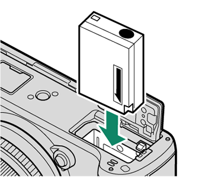
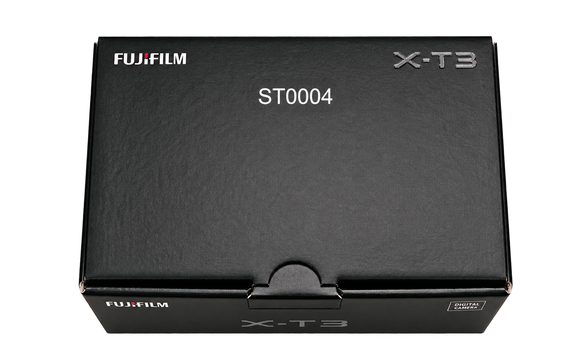

NP-W126S, 충전부터.
NP-W126S → ALIGN → LOCK

NP-W126S 배터리를 충전한 뒤 전원을 끄세요. 배터리의 주황색 표시와 고정 레버를 맞춰 넣고, 레버가 배터리를 고정했는지 확인한 후 커버를 닫습니다.
✓ 배터리가 고정되었고 커버가 닫혔나요?
정확한 방향 · 공식 도식 보기 ↗
기다리는 시간도 첫 촬영의 일부니까.
미리 만나고, 만져보고, 익혀보세요.
본체 · 배터리 NP-W126S · 충전기 BC-W126S · 스트랩
공식 설명서 기준. 지역·판매 구성에 따라 달라질 수 있어요.
렌즈는 키트 구성 확인 · SD카드는 별도 준비
X-T3 WW는 충전기 미포함 구성 · USB 충전 지원
시점을 바꾸며 살펴보세요.
+ 를 누르면 부위를 자세히 볼 수 있어요.
한 단계씩 준비하면 충분해요.

NP-W126S 배터리를 충전한 뒤 전원을 끄세요. 배터리의 주황색 표시와 고정 레버를 맞춰 넣고, 레버가 배터리를 고정했는지 확인한 후 커버를 닫습니다.
X-T3의 ISO·셔터 속도 다이얼과 렌즈 조리개 설정을 연습해 보세요.